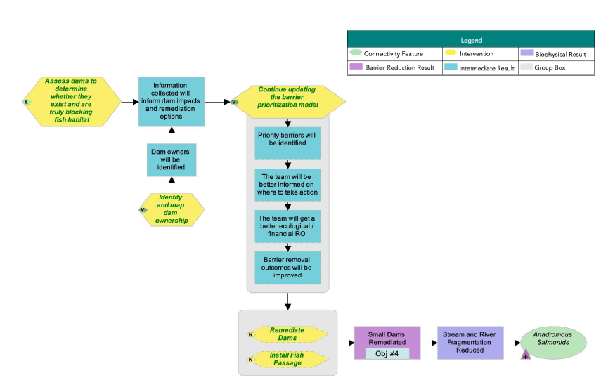

| ID | Actions | Details | Feasibility | Impact | Effectiveness |
|---|---|---|---|---|---|
| 1.1 | Rehabilitate dykes, berms, and other lateral barriers | The group selected a feasibility rating of High based on the assumption that our focus will be on smaller and cheaper projects, such as reconnecting ephemeral habitat and maintenance around the railroad dyke to reconnect wetland habitat. | High | Very high | Effective |
| 1.2 | Rehabilitate natural barriers to lateral connectivity | This can include various methods, such as beaver dam analogues. | High | Very high | Effective |
| 1.3 | Knowledge Gap: Improve mapping of lateral habitat and thermal refugia | Thermal imagery collected via drones could be used to map thermal refugia. | High | High | Effective |
| 1.4 | Knowledge Gap: Revisit previous rehabilitation and off-channel habitat creation projects to assess whether they are still fish-passable | Very high | Very high | Very effective | |
| 1.5 | Review LiDAR, aerial imagery, and field assessments to determine immediate lateral connectivity needs. | Very high | Very high | Very effective |
Situation Analysis
The following situation model was developed by the WCRP planning team to “map” the project context and brainstorm potential actions for implementation. Green text is used to identify actions that were selected for implementation (see Strategies & Actions), and red text is used to identify actions that the project team has decided to exclude from the current iteration of the plan, given that they were either outside of the project scope or were deemed to be ineffective by the planning team.
Strategies & Actions
In 2021, the Lower Nicola River watershed and many other parts of BC experienced devastating forest fires and floods. Prior to this, CWF worked with the Scw’exmx Tribal Council to assess priority barriers for rehabilitation that were identified through longitudinal models and undertake preliminary assessments of local priorities for potential lateral connectivity rehabilitation. Recognizing that there may be other urgent restoration priorities in the watershed, the Planning Team decided that the current areas of focus will be on reviewing LiDAR, aerial imagery, and field assessments to determine immediate lateral connectivity needs (see Action 1.5 below), responding to new barriers that may have developed in the watershed, and addressing other emerging needs in the watershed. The Planning Team will focus on the remaining strategies and actions in the table below in future years.
Effectiveness evaluation of identified conservation strategies and associated actions to improve connectivity for focal species in the Lower Nicola River watershed. The planning team identified five broad strategies to implement through this WCRP: (1) lateral barrier rehabilitation (priority on reconnecting thermal refugia), (2) stream crossing rehabilitation, (3) dam rehabilitation, (4) barrier prevention, and (5) progress tracking plan. Individual actions were qualitatively evaluated based on the anticipated effect each action will have on realizing on-the-ground gains in connectivity. Effectiveness ratings are based on a combination of “Feasibility” and “Impact”. Feasibility is defined as the degree to which the project team can implement the action within realistic constraints (financial, time, ethical, etc.) and Impact is the degree to which the action is likely to contribute to achieving one or more of the goals established in this plan.
Strategy 1: Lateral Barrier Rehabilitation
Strategy 2: Crossing Rehabilitation
| ID | Actions | Details | Feasibility | Impact | Effectiveness |
|---|---|---|---|---|---|
| 2.1 | Remove and decommission barriers | High | Very high | Effective | |
| 2.2 | Upgrade and resize crossings | Examples include installing larger culverts, replacing closed- with open-bottom culverts, or upgrading from culverts to bridges. | Very high | High | Effective |
| 2.3 | Install and maintain temporary mitigation | Examples may include installing fish ladders on barriers that cannot be remediated. | Medium | High | Need more information |
| 2.4 | Initiate a barrier owner outreach program | This can include reaching out to the Cattleman's Association, as well as potentially working with producers to adapt water-management practices. The outputs and materials generated could be exported outside the watershed to assist other watershed organizations with landowner engagement as well. | High | Medium | Need more information |
| 2.5 | Request regulatory action for non-compliant crossings | Request provincial and federal agencies to require that targeted, high-priority barriers be remediated. | High | High | Effective |
| 2.6 | Knowledge Gap: Identify barriers and map barrier ownership | High | Very high | Effective | |
| 2.7 | Knowledge Gap: Continue updating the structure prioritization model | The model process will be finalized, and priorities will be updated as new information becomes available. | Very high | Very high | Very effective |
| 2.8 | Knowledge Gap: Adapt the provincial fish passage framework to account for ephemeral habitat | Ephemeral habitat is especially important in the Lower Nicola River and need to be accounted for in habitat surveys and evaluated on a case-by-case basis. | High | Very high | Effective |
| 2.9 | Knowledge Gap: Assess barriers by applying an adapted version of the provincial fish passage framework | The first three steps are, (1) barrier assessments, (2) habitat confirmations (including of ephemeral habitat), and (3) remediation designs. | High | Very high | Effective |
Strategy 3: Dam Rehabilitation
| ID | Actions | Details | Feasibility | Impact | Effectiveness |
|---|---|---|---|---|---|
| 3.1 | Remove dams | Medium | Very high | Need more information | |
| 3.2 | Install fish passage | Medium | High | Need more information | |
| 3.4 | Knowledge Gap: Continue updating the structure prioritization model | The model process will be finalized, and prioritizations will be updated as new information becomes available. This can also include data related to flows. | Very high | Very high | Very effective |
| 3.5 | Knowledge Gap: Assess dams to determine whether they exist and are truly blocking fish habitat | Focus on identifying ownership of priority dams that we want to remediate in the short-term. | Very high | High | Effective |
| 3.6 | Knowledge Gap: Identify and map dam ownership | Very high | Very high | Very effective | |
| 3.6 | Knowledge Gap: Identify and map dam ownership | Very high | Very high | Very effective |
Strategy 4: Barrier Prevention
| ID | Actions | Details | Feasibility | Impact | Effectiveness |
|---|---|---|---|---|---|
| 4.1 | Work with land users to improve their aquatic connectivity practices | This can be done through the barrier ownership program, or for landowners that do not currently own barriers, this could include encouraging better consultation before crossings are installed. | High | High | Effective |
| 4.2 | Monitor new crossing installation compliance with passage regulations | nan | Very high | High | Effective |
Strategy 5: Communication and Education
| ID | Actions | Details |
|---|---|---|
| 5.1 | Engage and explore integration with existing regional initiatives | Engage and coordinate with the Nicola Watershed Governance Project and Fraser Basin Council initiatives (e.g., RAMS) to inform decision-making and implementation related to the strategies developed in this plan. These strategies will be shared with local First Nations, DFO, and others to inform coordinated efforts to restore fish productivity in the watershed Connectivity work will be incorporated where appropriate to achieve the greatest returns and longevity of benefits. |
| 5.2 | Implement the WCRP Progress Tracking Plan | The WCRP Progress Tracking Plan will help the team to determine whether we are achieving our goals and objectives. |
Theories of Change & Objectives
Theories of Change explicitly state assumptions around how the identified actions will achieve gains in connectivity and contribute to achieving the goals of the plan. To develop theories of change, the planning team developed explicit assumptions for each strategy which helped to clarify the rationale used for undertaking actions and provided an opportunity for feedback on invalid assumptions or missing opportunities. The theories of change are results oriented and clearly define the expected outcome. The following theory of change models were developed by the WCRP planning team to “map” the causal (“if-then”) progression of assumptions of how the actions within a strategy work together to achieve project goals.

Funding Sources
Funding Source | Spending Restrictions and Other Consideration |
|---|---|
Land Based Investment Strategy | Assessment and remediation of fish passage using provincial strategic approach. Primarily for remediation of Ministry-owned/orphaned barriers on forest service roads. |
Environmental Enhancement Fund | Fish and wildlife passage improvements and restoration at stream and animal crossings at Ministry Of Transport and Infrastructure roads including culvert retrofits and replacement to restore Pacific salmon and trout access, and wildlife tunnels. Primarily for crossings linked to highway infrastructure. |
Pacific Salmon Foundation's Community Salmon Program | For projects supporting the protection, conservation and enhancement or rehabilitation of Pacific salmon and their habitat. Funding for volunteer and not-for-profit community-based groups. Applicant must have a significant volunteer component to their group and to the project. Requires 50% match for funding (volunteer, in-kind, donation or other grants). |
Southern Boundary Restoration and Enhancement Fund | Supports three activities: (1) develop improved information for resource management; (2) rehabilitate and restore marine and freshwater habitat; and (3) enhance wild stock production through low technology techniques. Emphasis for funding is on stocks of conservation concern, particularly those contributing to a fishery and stocks of bilateral fishery relevance. |
Enhancement and Restoration Grants | Projects that focus on freshwater wild fish, native wildlife species and their habitats and have the potential to achieve a significant conservation outcome while maintaining or enhancing opportunities for fishing, hunting, trapping, wildlife viewing and associated outdoor recreational activities. Primary focus is on provincially managed fisheries such as Steelhead, Westslope Cutthroat Trout. Requires 50% funding match. |
Environmental Damages Fund | Direct funds received from fines, court orders and voluntary payments to priority projects that will benefit Canada’s natural environment, under four categories of improvement (in order of preference): (1) restoration, (2) environmental quality improvement, (3) research and development, and (4) education and awareness. |
Habitat Stewardship Program for Aquatic Species at Risk | Program for non-profits, Indigenous governments, academic institutions for activities that align with recovery actions identified in SARA recovery documents and/or COSEWIC assessment documents. Project must address one or more of three broad categories: (1) important habitat for aquatic species at risk is improved and/or managed to meet their recovery needs; (2) threats to aquatic species at risk and/or their habitat are stopped, removed, and/or mitigated; and (3) collaboration and partnerships support the conservation and recovery of aquatic species at risk. Limited to at-risk species listed under COSEWIC and/or SARA as threatened, endangered, or special concern. |
Canada Nature Fund for Aquatic Species at Risk | Funding program aimed at addressing priority threats for aquatic species at risk listed as endangered, threatened or Special Concern by COSEWIC, as they align with existing federal, provincial or other local recovery plans. Limited to species in the Columbia and Fraser basins in BC, among other priority areas across Canada. Focus on multi-year, multi-partner initiatives that apply an ecosystem or multi-species approach and create a legacy by enabling recovery actions that carry beyond the life of the funding program. Amounts from $100K-$1M available per year. |
BC Salmon Restoration and Innovation Fund | Funding for Indigenous enterprises, academia, industry associations, stewardship groups and commercial groups to support initiatives that support the protection and restoration of wild Pacific salmon and other BC fish stocks or ensure fish and seafood sector in BC is environmentally and economically sustainable. Five main priorities including species of concern rebuilding through habitat restoration with priority for projects that are part of a watershed-scale restoration plan/prioritization effort; build on successful previous restoration efforts; focus on critical habitat and/or the rehabilitation of natural ecosystem processes. |
Aboriginal Fund for Species at Risk | Program for Indigenous groups for activities that align with recovery actions identified in SARA recovery documents and/or COSEWIC assessment documents for species listed as Endangered, Threatened, or Special Concern by SARA or COSEWIC. Project must address one or more of four broad categories: (1) habitat for species at risk is improved and/or managed to meet their recovery needs; (2) threats to species at risk and/or their habitat are stopped, removed and/or mitigated; (3) collaboration, information sharing and partnership between Indigenous communities, governments and organizations and other interested parties (e.g. federal/provincial/territorial governments, academia, industry, private sector) is enhanced; and (4) capacity within Indigenous communities, to lead in the stewardship of species at risk and contribute to broader SARA implementation, is strengthened. |
Federal Gas Tax Fund - Community Works Fund | Funding available to local governments from federal gas tax, with funds to be allocated for a variety of municipal projects/initiatives, including local roads/bridges and disaster mitigation. |
Disaster Mitigation and Adaptation Fund | For those projects where flood risk is high: funding available to local, regional and provincial governments, private sector, non-profit organizations, and Indigenous groups for projects aimed at reducing the socio-economic, environmental and cultural impacts triggered by natural hazards and extreme weather events and taking into consideration current and future impacts of climate change in communities and infrastructure at high risk. Includes both new construction of public infrastructure and modification/reinforcement of existing infrastructure. Projects must have a minimum of $20 M in eligible expenditures and can be bundled together. |
Community Gaming Grants | Funding for non-profit organizations (check funding program guidelines for specific eligibility requirements) for programs that help to protect and improve the environment by: (1) conserving or revitalizing local ecosystems; (2) reducing greenhouse gas emissions; (3) providing community education or engagement opportunities related to the environment and agriculture; or (4) supporting the welfare of domestic animals and/or wildlife. Grants range from $100K-250K per year. |
Sitka Foundation | Funding for registered charities, universities and government agencies (qualified Canadian organizations) for projects related to coastline and watershed conservation and climate change in four key areas: (1) land, water, and ocean conservation; (2) scientific research for nature and the environment; (3) public engagement around the importance of a healthy environment; or (4) innovative conservation efforts in Canadian communities, at the local, provincial, and federal levels. |
TULA Foundation | Supports various environmental programs of interest to the Foundation on a case-by-case basis. |
Vancouver Foundation | Granting agency for community, social and environmental initiative for qualified Canadian organizations (charitable organizations, universities, government agencies). Granting programs change on an annual basis. |
BC Conservation Foundation Small Project Fund | Funding available to Non-profits, fish and wildlife clubs (sportsmen’s associations), businesses, local/regional governments, public organizations and First Nations for projects with demonstrated positive impact for fish, wildlife and habitat, including outreach programs. Preference given to projects where BCCF is not the sole funder. |
Real Estate Foundation of BC General Grants | Funding for First Nations, charities and societies, non-governmental organizations, universities and colleges, trade associations, local and regional governments, and social enterprises registered as C3s for sustainable land use and real estate practices in BC. Funds up to 50% of cash portion of a project. |